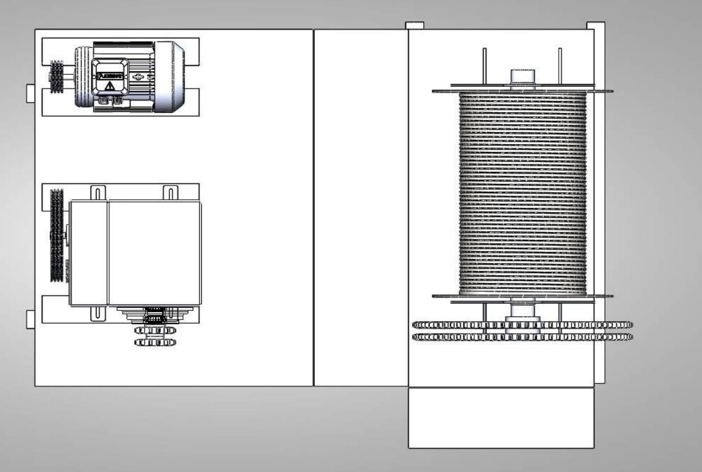
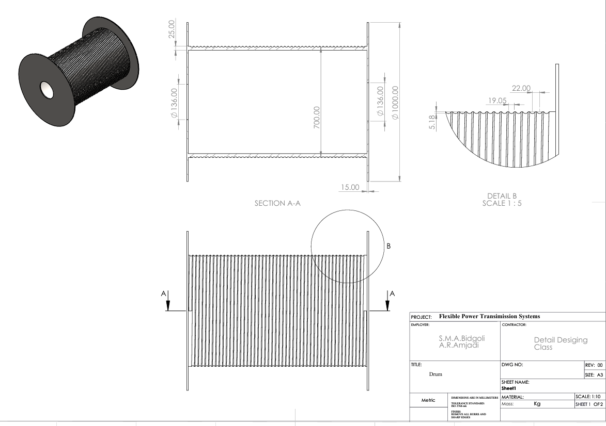
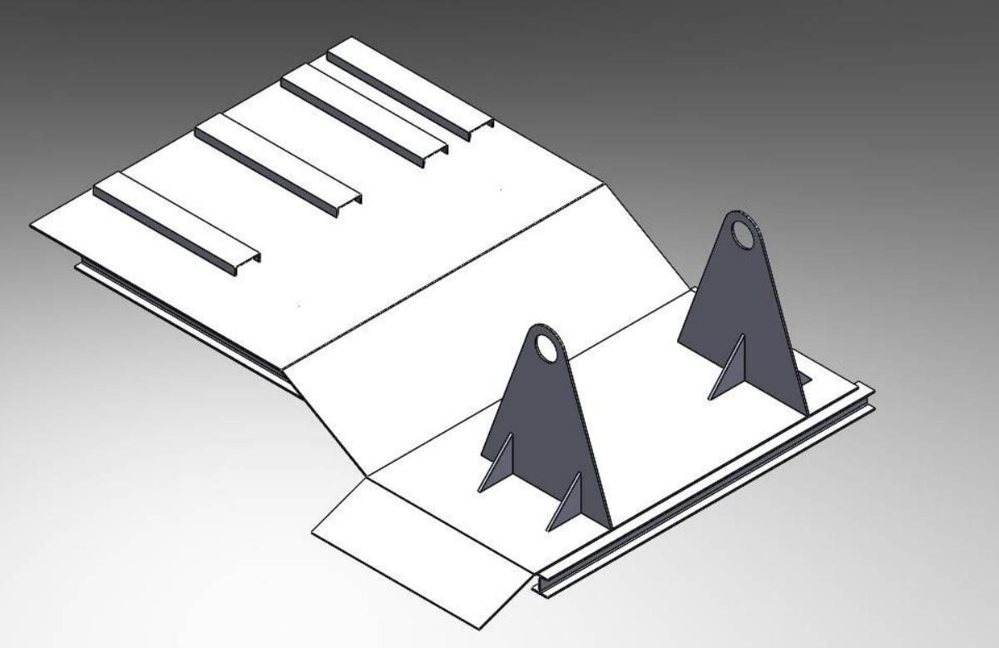

Machine Design
Mine Haulage Winch
The belt drive, wire rope, roller chain, cable drum, drum shaft, bearings and chassis of a winch that hauls a 5-tonne cart up a 25° mine tunnel.

Overview
Select the belts, wire rope and chain, and design the drum, drum shaft, bearings and chassis of a winch that hauls up to 5 t up a 150 m tunnel at 25°, in 5-minute cycles, from an 11 kW motor and the gearbox of Project 3.
Approach
- Static analysis of the cart on the incline gives the rope tension; the effective power after the transmission losses gives the cart speed.
- V-belt drive sized from the design power and the speed ratio; two trials lead to three B-125 belts.
- Wire rope selected for static strength and bending fatigue over the drum and sheave; drum sized for two rope layers.
- Duplex roller chain from the gearbox to the drum; drum shaft in fatigue; self-aligning bearings; welded chassis with adjustable motor and gearbox seats.
Results
| Wire rope, static strength at FS = 4 | MBF ≥ 84 696 N |
|---|---|
| Wire rope, bending fatigue (0.19 million bends) | 22 348 N ≤ 25 788 N allowable |
| Drum fleet angle | 1.58° within 1.5°–4° |
| Drum-shaft bearings | L₁₀ = 160 Mrev vs 20 Mrev required |
| V-belts | 3 × B-125, pulleys 7 / 20.16 in |
| Wire rope | ¾ in, IPS, 6 × 36 IWRC, 183 m |
| Chain | ANSI No. 140 duplex, 13 / 83 teeth |
| Drum | Ø700 mm × 1.1 m, two-layer, DIN 15061 |
| Drum shaft | Ø125–135 mm |
From the report





